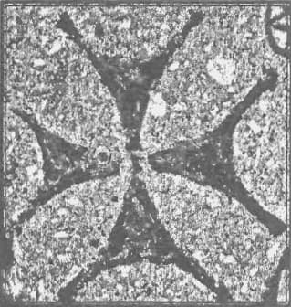

Peisajul intelectual general în acest moment este dureros pentru cei ce ajung să îl cunoască, și impresia pe care lumea intelectuală o lasă cuiva din afară este mai degrabă aceea de sanatoriu de boli sufletești și mintale fără doctori. Este trist să vezi cît de diferite pot fi opiniile unor întregi, una față de alta, ori tabere partizane, sau, iarăși, de prea multe ori, chiar indivizi ca atare pe perioade scurte de timp cu privire la anumite subiecte. Creaționismul și evoluționismul, geocentrismul și heliocentrismul, data Nașterii Mîntuitorului Hristos, data prăznuirii Paștilor la Creștini sau la Iudei, autenticitatea giulgiului de la Torino sau a Sfintei Lumini de la Ierusalim, autenticitatea textului Byzantin al Noului Testament și multe altele sînt subiecte care împart lumea intelectuală creștină.
Cunoașterea istoriei, totuși, face lumină și ne aduce un plus de înțelegere a fenomenului, dar și un plus de mîhnire. Cu cît săpăm mai mult vedem că pînă la venirea în lume a Mîntuitorului și răspîndirea Creștinismului, atmosfera intelectuală a antichității păgîne era absolut identică: mulțimi de cărturari / intelectuali împărțiți în zeci și sute de tabere, urmînd unei școli, unui curent de gîndire, sau încercînd să făurească unul nou. Odată cu propovăduirea Apostolilor și a Părinților, pentru prima dată în istoria gîndirii situația s-a schimbat; precum la Răstignirea Mîntuitorului Hristos sectele iudaice ale Fariseilor, Saducheilor, Esenienilor și Samarinenilor și-au dat mîna cu stăpînirea Romană pentru uciderea Fiului lui Dumnezeu, așa și la propovăduirea apostolică și patristică necreștinii s-au unit împotriva Adevărului. De la Nașterea Mîntuitorului pînă azi, lumea întreagă se împarte iremediabil în două, ori de cîte ori Hristos intră în mijlocul oamenilor: Unii vor fi cu El, iar alții împotriva Lui. Mîntuitorul Hristos a fost singurul în istoria omenirii care nu a lăsat și nu va putea să lase vreodată pe cineva indiferent. Pe Sfîntul Apostol Pavel Stoicii și Epicureii, două tabere intelectuale adverse, l-au dus în Areopag nu ca să învețe ceva de la el, ci ca să îl dea spre munci, acolo unde se făceau judecățile de crime1. În cele din urmă l-au luat în rîs cînd l-au auzit propovăduind Învierea din morți, neavînd vreun cuvînt să-i stea împotrivă Apostolului neamurilor. Iar ceilalți Apostoli și mai apoi Părinții Bisericii au trebuit să plătească cu viața îndrăzneala mărturisirii Adevărului.
Hristos Dumnezeu, Cuvîntul și Înțelepciunea cea veșnică, l-a făcut pe om iubitor de înțelepciune, însetat de cunoașterea cea nemincinoasă. Prin cădere, însă, omul a uitat Cine este Înțelepciunea, și închinîndu-se sie-și și făurind din patimile sale idoli cărora să li se închine, s-a închinat în cele din urmă înțelepciunii minții omenești căzute. De aceea, în setea sa de mai multă și mai adevărată cunoaștere, omul antichității înțelesese că aceasta nu poate veni de la oameni, ci de la ceea ce credea el că este dumnezeiesc. Așa s-a făcut că școlile de filozofie nu au fost niciodată școli de acumulare goală a unor cunoștințe, ci școli de inițiere în riturile, credințele și misteriile păgîne, care inspirau pe cei inițiați. Nu este deloc de mirare că cei mai mari filosofi ai istoriei omenirii au fost totodată și cei mai mari inițiați. Cazurile unor Pythagora, Zoroastru, Budha, Platon, Aristotel și alții sînt extrem de cunoscute. Alexandru Makedon își ceartă dascălul2, pe Aristotel, printr-o scrisoare ce a ajuns pînă la noi: „Nu e drept ce ai făcut, editînd cuvintele esoterice.” Aristotel îi răspunde3: „Fii, deci, împrumutîndu-le și ne-împrumutîndu-le. Căci [cititorii lor] sînt părtași numai cu cei ce au auzit”.
Apariția Creștinismului a fost singurul șoc care a zguduit mersul lumii vechi; pentru prima dată în istorie Creștinii erau aceia în fața cărora toată înțelepciunea antică pălea; lor nu li se putea sta împotrivă în cuvînt, dîndu-li-se, după cuvîntul Mîntuitorului4, „gură și înțelepciune căreia nu-i vor putea grăi nici sta împotrivă toți potrivnicii.” Lumea intelectuală păgînă, zbătîndu-se în neputința dezbinării ideilor și conceptelor, s-a găsit amenințată de focul și sabia cuvîntului plin de Duh al Creștinilor. Dezechilibrul era evident: Pe de o parte Creștinii, care erau gata să moară și o și făceau pentru Adevărul și Înțelepciunea veșnică, plini de puterea Cuvîntului lui Dumnezeu, iar pe de alta niște maeștri ai cuvintelor plăcute urechii și ideilor omenești, de multe ori suficient de trupești pentru a nu mișca decît pe cei cuprinși de patimi, deschiși compromisurilor de tot felul și lipsiți de puterea mărturisirii învățăturii dobîndite prin inițiere5.
În confruntarea dintre Creștini și păgîni Duhul Sfînt a fost Acela care i-a făcut pe primii să fie biruitori asupra filosofiei antice și să aducă Bisericii încă din vremea Apostolilor sufletele însetate de Adevăr din tabăra filosofilor păgîni. Urmarea o vedem și în Faptele Sfinților Apostoli: După venirea la Hristos mulți dintre Creștini primeau daruri cerești, ca mărturie a fierbințelii credinței lor și a puterii Duhului Sfînt. Sfîntul Pavel ne spune6: „Că unuia prin Duhul se dă cuvântul înțelepciunii, iar altuia cuvântul cunoștinței, întru același Duh. Și altuia Credința, întru același Duh; iar altuia darurile tămăduirilor, întru același Duh. Iar altuia lucrările puterilor, iar altuia prorocie, iar altuia alegerile duhurilor, iar altuia feluri de limbi, iar altuia tălmăcirea limbilor. Și toate acestea le lucrează unul și același Duh, împărțind deosebi fiecăruia, precum voiește.” Un astfel de suflet binecuvîntat, dăruit de sus cu putere în cuvînt, mult rîvnitor și iubitor de Adevăr, a fost Sfîntul Ierarh Dionysie Areopagitul. Asupra sa vom stărui în rîndurile de mai jos.
Din scrierile sale știm că la anul 33 AD, el era un tînăr învățăcel din Egypt și acolo a văzut eclipsa de soare de deasupra Țării Sfinte, care a durat 3 ceasuri, la Răstignirea Mîntuitorului; așadar, nu credem că greșim dacă așezăm nașterea sa în jurul anului 15 AD. După convertirea sa relatată în cap. 17 din Faptele Apostolilor, Sfîntul Pavel l-a luat cu sine și l-a întărit în noua credință, hirotonindu-l și trimițîndu-l mai apoi, conform tradiției7 să fie spre ajutor Sfîntului Ierothei al Athenei. A petrecut împreună cu acesta mulți ani, și în cele din urmă s-a dus la Roma, să-i fie de folos Sfîntului Clement Romanul (după unii cercetători papă al Romei între 88-97) în lucrarea sa apostolică. Acesta l-a trimis împreună cu încă doi bărbați duhovnicești, Rustic și Eleftherie, să propovăduiască Evanghelia în Galia (Franța de azi). Aici a și fost omorît, undeva spre anul 100 d.Hr., sau poate după aceea, la Paris, care îl are de atunci drept principalul Sfînt protector. Mucenicia sa a fost așternută în scris de către unii din ucenicii săi și se păstrează pînă azi, chiar dacă în limba română ea nu s-a tradus încă după original. Mai apoi, pe baza acestui text și a scrierilor areopagitice au fost alcătuite multe alte cuvinte de laudă la viața și petrecerea Sfîntului Dionysie.
Pînă acum 500 de ani s-a crezut de către toată lumea că scrierile ce îi poartă numele sînt autentice. Aceasta s-a petrecut mai ales pentru că, aceste scrieri fiind foarte înalte și greu de înțeles și de asimilat, ele nu au circulat singure, ci în majoritatea manuscriselor erau însoțite de scoliile sau comentariile unora dintre cei mai aleși Părinți ai Bisericii. Aceștia au demonstrat, încă din prefață, pe de o parte, autenticitatea scrierilor areopagitice, iar, pe de altă parte, ortodoxia lor. Veacul al 16-lea, aducînd cu sine duhul protestant, a pus în discuție autenticitatea scrierilor, apărînd astfel primele confuzii și neînțelegeri după 1000 de ani. S-a spus atunci că nu ar fi autentice, avînd mult prea multe locuri comune cu scrierile lui Proclu, un păgîn neoplatonic care a trăit în a doua jumătate a veacului al 5-lea. Lipsind argumentele foarte solide din Părinții Bisericii, ne-ortodocșii au început să rătăcească precum cei ce se îndoiseră de autenticitatea scrierilor areopagitice la începutul veacului al 6-lea, iar astăzi soarta autorului corpusului areopagitic, pentru intelectualii occidentali, este aceea a unui autor anonim care la sfîrșitul secolului V d.Hr. a plagiat pe Plotin și Proclu. Și pentru că și în lumea ortodoxă citirea și folosirea scrierilor Părinților a fost lăsată deoparte, și la noi opiniile despre corpusul areopagitic și autorul lor sînt aceleași cu cele din Apus. Mai ales ușurința de comunicare și accesul la anumite studii și ediții occidentale, în cea mai mare parte ne-ortodoxe, ne obligă să analizăm cu atenție argumentele împotriva autenticității scrierilor ce poartă numele Sfîntului Dionysie.
Mărturisim că studiul de față este încă departe de a lămuri toate locurile ce au ridicat cercetătorilor moderni semne de întrebare în lucrările areopagitice și că multă vreme ne-am întrebat ce se poate spune împotriva avalanșei de afirmații care vor să dovedească falsul. În cele din urmă, pentru că nu ne era dat nouă să reinventăm roata, nici să redescoperim America, ci alții au făcut-o cu mult înainte de noi, ne-am adus aminte de comentariile Sfîntului Maxim Mărturisitorul la scrierile areopagite și am aflat răspuns la mai toate întrebările posibile. Iar dacă un vîrf al vieții monahale, un înger în trup, dreptar al Ortodoxiei, învățător al bunei-credințe și luminător al Bisericii, așa cum a fost Sfîntul Maxim, a fost luminat să ia apărarea și să explice pe înțelesul celor mulți scrierile areopagitice, și împreună cu el și alți comentatori mai puțin cunoscuți, dar luminați de același Duh Sfînt, precum Ioan din Skythopolis, împreună cu marea majoritate a Părinților Bisericii au luptat pentru apărarea autenticității scrierilor areopagitice, atunci e limpede că sînt de ales una din două variante: Sau întreaga Biserică Ortodoxă de după anul 533 este în înșelare gravă, sau autorul scrierilor este chiar Sfîntul Dionysie, ucenicul Sfîntului Pavel. Pentru aceea, fără pretenția că materialul nostru va face pe deplin lumină, nu ne rămîne decît să analizăm argumentele Părinților Bisericii împotriva acuzațiilor ce i se aduc autorului scrierilor areopagitice. Singura precizare pe care o aducem este aceea că scoliile la corpusul areopagitic puse sub numele Sfîntului Maxim nu îi aparțin în totalitate. Majoritatea lor sînt de fapt ale unui scolastic din cetatea Skythopolis din Palestina, Ioann, ucenic al Sfîntului Sava cel Sfințit, care a scris primul comentariu ortodox la scrierile Sfîntului Dionysie pe la anul 530 d.Hr.
Pe scurt, acestea sunt principalele acuzații ce se aduc corpusului areopagitic, la care dăm cîteva posibile răspunsuri:

Unul din cele mai cunoscute este faptul că Sfîntul Dionysie citează explicit din Sfîntul Ignatie Purtătorul de Dumnezeu, din scrisoarea acestuia către Romani8. Lucrul care șochează este întrebarea: Cîți ani să fi avut Sfîntul Dionysie, dacă Sfîntul Ignatie a pătimit în anul 107, așa cum se crede în general? Răspunsul îl dă Sfîntul Maxim Mărturisitorul, spunînd că Sfîntul Ignatie a pătimit înainte de vremea împăratului Domitian (81-96 AD)9, nu așa cum știm astăzi, pe baza unei mărturii de la istoricul Evsevie de Kesaria. Așadar ajungem la concluzia că la începutul domniei lui Domitian, Sfîntul Dionysie avea cam 65 de ani. Nimic neobișnuit pentru cineva obișnuit cu scrisul și cititul să facă lecturi și să citeze la vîrste mai tîrzii pe unul din cei mai cunoscuți și mai iubiți dintre Părinții Bisericii, aflați deja în ceata Sfinților și Fericiților Mucenici.
De asemenea, îl citează și pe „filosoful Clement”10. Dacă este să credem textelor aghiografice care menționează chemarea la Roma a Sfîntului Clement de către Sfîntul Petru (adică obligatoriu înainte de anul 64), nu avem nici un anacronism. Sfîntul Clement Romanul nu a ascuns pregătirea sa filosofică, și aceasta reiese chiar și din puținele scrieri pe care critica occidentală modernă i le recunoaște ca autentice. O altă problemă este că acest citat din Sfîntul Clement nu se regăsește în nici una din scrierile considerate de critici drept autentice ale ucenicului Sfîntului Petru. Avem, așadar, un motiv în plus să susținem că cele două lucrări ale Sfîntului Clement, Omiliile și Recunoașterile, în care își povestește formarea filosofică și căutarea sa prin școlile de filozofie pînă la întîlnirea cu Sfîntul Apostol Petru, și care nu au ajuns pînă la noi întregi, pot fi și ele autentice.
Alte aparente argumente ale scrierii tîrzii: Unii cercetători menționează diferența dintre simplitatea cu care scriu Părinții Apostolici și textul elaborat și extrem de dens al Sfîntului Dionysie. Cum ar fi trebuit să scrie unul din cei mai educați filosofi ai acelei vremi? Sau doar pentru ne-creștini e permis acest lucru?
La acest an numele său este menționat de fostul patriarh al Antiohiei, ereticul Sever, în sprijinul afirmațiilor sale, iar teologii din Constantinopol îi replică faptul că este cu neputință ca scrierile să fie autentice, că dacă ar fi, ele ar fi fost cunoscute cel puțin de către Sfinții Athanasie și Kyrill ai Alexandriei. Sever le răspunde că aceștia l-au cunoscut pe Sfîntul Dionysie și l-au folosit, dar nu l-au menționat nominal.11 Cert este că imediat după acest incident sau poate chiar înainte de el, un scolastic din Skythopolis, Ioann, amintit mai sus, a scris primul comentariu în care apără autenticitatea și ortodoxia scrierilor Sfîntului Dionysie.12 După el au urmat și alții care s-au luptat pentru apărarea autenticității scrierilor.
„Tăcerea” de pînă la anul 532 se explică întîi prin aceea că, la fel ca și majoritatea scrierilor Părinților apostolici care au scăpat cu greu la lumină din epocile în care creștinilor trebuia să li se confiște cărțile și să fie distruse, nici scrierile areopagitice nu au fost scutite de un destin tragic. Apoi, faptul că ele nu au fost cunoscute nu este un lucru de mirare. Renumitul istoric Evsevie din Kesaria își scrie istoria sa la începutul veacului al 4-lea și trece în revistă o mulțime de scrieri de pînă la el; mulți consideră că ceea ce nu este menționat de Evsevie nici nu a existat. De asemenea, zic ei, ar fi trebuit cunoscută și de Orighen, un alt comentator al scrierilor de dinainte de el. Nimic mai fals. Învățătura sau Dihahia celor doisprezece Apostoli și Epistola către Diognet au fost texte din primele veacuri creștine care nu au fost cunoscute nici de Orighen, nici de Evsevie, și iată că au ajuns pînă la noi, prin purtarea de grijă a lui Dumnezeu.
Sfîntul Maxim Mărturisitorul răspunde la această acuzație zicînd că „Evsevie a trecut cu vederea multe lucruri care nu au ajuns în mîinile lui, și nici măcar nu a spus că a strîns toate scrierile din toate vremurile. Dimpotrivă, mărturisește că erau cu mult mai multe cărți, pe care el nici nu le-a văzut. Pot să numesc multe pe care nu le-a avut, și chiar din cele ale țării sale, precum lucrările lui Ymeneu și Narkis care s-au sfințit în Ierusalim. Eu chiar am oarecare din cele ale lui Ymeneu. Și nu a scris nici de ostenelile lui Panten, nici de ale lui Clement Romanul, în afară de epistolele sale, și nici de cele mai multe dintre ale altora. Nu știu dacă Orighen amintește măcar despre ele, sau măcar de patru. Dar un anume diacon Petru mi-a spus că toate lucrările Dumnezeiescului Dionysie se păstrează în Roma în biblioteca celor sfinte.”
Avem, totuși, un autor care l-a citit pe Sfîntul Dionysie. Acesta este Sfîntul Ioann Gură de Aur. În a 7-a cateheză către cei ce se luminează menționează cele nouă cete îngerești în ordinea în care le amintește și Sfîntul Dionysie. În a 3-a omilie despre Anna numește Sfînta Euharistie „simbol”, așa cum o face doar Sfîntul Dionysie înainte de el. Iar în omilia sa numită „Despre prorocii mincinoși”, întreabă: „Unde este Ignatie, casnicul lui Dumnezeu? Unde Dionisie, pasărea cerului? Unde Ipolit, cel prea dulce și bine-înțelegător?”; însă pentru epitetul pe care i-l dă Sfîntului Dionysie cercetătorii apuseni au lăsat deoparte conținutul autentic al omiliei și au declarat-o „spuria”, adică falsă, neautentică.
Dăm aici întreg pasajul, pentru a nu exista dubii asupra textului: „Iar slujitorii și văzătorii atotsfințiți ai celor prea-sfinte, privind în chip sfînt prea-sfînta Taină, slăvesc printr-o laudă de obște pe Începătorul binefăcător și de bine dătător, de la care ni s-au arătat nouă Tainele mîntuitoare care lucrează cu sfințenie îndumnezeirea celor ce se desăvîrșesc. Lauda aceasta unii o numesc cuvîntare de laudă, alții simbolul credinței, iar alții, precum socotesc, mai dumnezeiește, mulțumire ierarhică, ca pe una ce cuprinde sfintele daruri ce ne-au venit de la Dumnezeu.”13 La o aparentă privire aici Sfîntul Dionysie ar vorbi despre simbolul de credință așa cum îl cunoaștem azi și pe care îl rostim la Liturghie, însă lucrurile stau diferit. Întreaga sa carte despre ierarhia bisericească este plină de rolul simbolurilor în mîntuirea obștii creștine. Ajunge chiar să numească întreaga Liturghie „simbol”. Mai mult, se știe că mărturisirea dreptei credințe era parte din anaforaua Liturghiei primare14. Așadar, nu este nici o contradicție, așa cum și-ar dori unii din cei care văd în textul Sfîntului Dionysie vreo aluzie către mărturisirea de credință de la Sinodul 2 Ecumenic, introdusă obligatoriu în Liturghie la sfîrșitul secolului al 5-lea. Mărturisirea de care vorbește Sfîntul Dionysie nu era scrisă și nici comună tuturor Bisericilor. Mai sînt și alte mărturii din vremea Părinților apostolici ale unor astfel de simboluri de credință, ceea ce ne face să credem că nu e nimic anacronic în cele scrise de Sfîntul Dionysie.
În Ierarhia Bisericească cap. 4 Sfîntul Dionysie vorbește despre sfințirea uleiului amestecat cu aromate, cu care să se facă mirungerea celor care vin să se boteze. Majoritatea liturgiștilor susțin că aceasta este o rînduială tîrzie, căci în vremea Apostolilor și după aceea Darul Sfîntului Duh se dădea prin punerea mîinilor, așa cum se menționează în Noul Testament. Dar deja în veacul al 3-lea Didascalia, dar și scrierile aghiografice cu multe elemente apocrife numite Faptele lui Thoma și Faptele lui Ioan, care sînt scrise în secolul 2, menționează folosirea untdelemnului15. Și ne putem pune, așadar, întrebarea firească: Dacă această tradiție exista la începutul secolul 2, ce ar fi împiedicat-o să existe și la sfîrșitul secolului întîi? Dacă era îngăduită prăznuirea datei Paștilor în zile diferite, în funcție de tradiția primită de fiecare comunitate de la Apostoli, oare de ce nu era permis același lucru și pentru Taina Mirungerii?
Și aici putem replica destul de simplu: Cîtă vreme termenul de „monah” a existat încă înainte de Hristos, cîtă vreme Sfîntul Pavel și-a tăiat perii capului la Templul Legii Vechi, urmînd obiceiurile vechilor Nazorei (FA 24:18 „m-au aflat curățit în Biserică, nu cu gloată, nici cu gâlceava, oarecare Iudei din Asia”), oare nu putem găsi nimic din aceste rînduieli trecînd în arsenalul Creștinilor și este cu adevărat nevoie să așteptăm 300 de ani să primim de la Sfinții Antonie și Pahomie cîteva elemente despre viața monahală și rînduielile ei? Desigur, se naște aici o discuție, despre monahismul primelor 300 de ani de creștinism, și ar merita un studiu aparte, cu suficiente mărturii, inclusiv de la păgîni, despre rînduielile primilor Creștini, dar nu insistăm aici asupra acestei teme.
Apariția creștinismului a fost un șoc pentru lumea antică. Primiți la început cu ură, ură care nu s-a terminat vreodată, Creștinii au trebuit să arate că se pot folosi și de instrumentele filosofiei antice pentru a-și susține punctele de vedere, că nu urăsc instrumentele, ci fug de vătămarea adusă de felul în care sînt folosite aceste instrumente. Cu cîteva regretabile excepții, majoritatea dintre ei s-au preocupat destul de mult pentru rămînerea în Tradiția Bisericii și au adus mari servicii istoriei în general, de multe ori și prin scrierile lor. Influența pe care scrierile Părinților apostolici au avut-o pe parcursul veacurilor 1 și 2 a fost imensă. Mulți dintre filosofii păgîni au început să preia cuvintele inventate de Sfinții Apostoli, împreună cu argumente și teorii din scrierile Creștine și să-și lărgească aria culturală. Filosofi prin vocație, Sfîntul Dionysie Areopagitul, Sfîntul Clement Romanul, și Sfîntul Mucenic Iustin Filosoful, și alții din vremea lor au venit la credință căutînd asiduu răspunsuri la întrebările existențiale care îi chinuiau. Pentru ei și pentru alții ca ei au și scris mai multe tratate de apologetică în care erau cuprinse multe elemente filosofice, pe care, de această dată, le întorceau împotriva lumii păgîne din care acești Părinți ai Bisericii proveneau. În scurtă vreme întreg peisajul cultural Greco-Roman a ajuns să poarte o puternică amprentă creștină.
În cele din urmă, la începutul secolului al 3-lea, într-un climat cu extrem de multe influențe creștine, filosoful Plotin a găsit în Alexandria pe dascălul de filozofie de care avea nevoie, un anume Numenie. Acesta, unul din ultimii platonicieni, susținea doctrina celor „trei zei” (zeul prim – Binele, intelectul secund sau Demiurgul și lumea, sau sufletul universal), și întreba, precum sfinții apologeți ai secolului al 2-lea: „Cine este Platon, dacă nu Moisi care vorbește Greaca attică?” După cîțiva ani de ucenicie lîngă acest platonician, Plotin ajunge în cele din urmă la Roma, unde stă cîțiva ani și începe să publice teorii cu totul noi, sprijinite pe filosofia lui Platon, dar cu concepte inedite, anume acela de îndumnezeire, de extaz, trăiri mistice, etc, și cu un vocabular nou.16 În scurt timp face școală la Roma și ajunge foarte renumit atît în capitala imperiului, cît și în restul lumii filosofice. Practic, pentru filosofia antică el a fost ultimul mare filosof păgîn, a fost cel care a dat filosofiei antice un suflu care va mai ține încă 200 de ani după el, prin curentul care a fost denumit mai apoi neo-platonism.
Cercetătorii moderni ne-au obișnuit să credem că la început a fost filosofia neoplatonică, cu toate conceptele ei mistice și cu toți termenii ei, iar mai apoi un autor anonim care se semnează „Sfîntul Dionysie Areopagitul” a ieșit pe piață cu unele din cele mai dumnezeiești lucruri scrise vreodată. Avem, însă, niște nepotriviri. Întîi de toate faptul că Plotin, părintele filozofiei neoplatonice, prin conceptele sale l-a depășit pe dascălul său Numenie de nenumărate ori (deși știm că „nu poate ucenicul să fie mai mare decît dascălul său”) și chiar s-a depărtat într-o zonă metafizică absolut străină tuturor celor dinaintea sa. Elementul șocant pentru toată lumea antică este mutarea atenției generale, prin filosofia lui mistică, de la luptele de idei în care lumea filosofică și intelectualii vremii petreceau, la ideea de extaz ca țel al vieții filosofice. Pe lîngă acestea se adaugă o bogăție de termeni noi și foarte profunzi.
După Plotin, care a creat școală și a dus mai departe câteva sute de ani dezbaterile de idei din lumea antică, pe la anul 450 apare un nou scriitor, foarte talentat, anume Proclu, ultimul mare scriitor păgîn antic, care duce la desăvîrșire ideile lui Plotin.
Este foarte tentant a-i citi în paralel pe Proclu și pe Sfîntul Dionysie și a descoperi asemănările și deosebirile, dar mai ales paternitatea ideilor, că adică ideile lui Proclu sînt aparent dezvoltate la Sfîntul Dionysie; însă Părinții Bisericii au avut o altă atitudine, mult mai radicală, dînd o dată pentru totdeauna răspunsul cel mai bun pentru această ispită a intelectului: Plotin și Proclu și-au luat ideile de la Sfîntul Dionysie, nu invers.
Critica modernă le dă voie ritorilor și filosofilor păgîni din toate vremurile să inventeze cuvinte, dar unui filosof creștin educat la cele mai bune școli de filozofie ale veacului 1 nu îi acordă acest drept. De mirare este faptul că Sfinților Apostoli, compozitori de noi cuvinte în limba ellină17, nu li se ia și lor acest privilegiu… Sînt foarte mulți termeni noi în opera Sfîntului Dionysie. Poate nu la fel de mulți pe cît la Sfîntul Grigorie Theologul sau Sfîntul Ioann Gură de Aur. Dar socotim că după dreptate este să dăm chiar și unui autor creștin aproape necunoscut pînă la anul 532 dreptul la revelația dumnezeiască și la folosirea metodelor retorice și a bagajului lingvistic al filosofiei antice.
Nu sînt multe de vorbit. Ca să înțelegem bine cum stau lucrurile, iată ce spune Sfîntul Maxim Mărturisitorul, comentator al Sfîntului Dionysie:
„Știu pe oarecarii din filosofii cei din afară, și mai ales pe Proclu, care s-au folosit de multe din cele cuprinse cu mintea de Fericitul Dionysie, dar cuvintele lor sînt goale. Și este bănuiala că din ele au luat precum cei mai vechi din filosofii din Athena, învistierind scrierile sale, încît prescurtînd din cartea de față, au ascuns-o, ca să-i vadă pe ei [lumea] părinți ai dumnezeieștilor sale cuvinte, și acum după iconomia lui Dumnezeu s-a arătat scrierea de față către mustrarea slavei lor deșarte și a răutății lor. Și că le este lor obișnuința să învistierească pe cele ale noastre, ne învață Dumnezeiescul Vasilie, în omilia „La început era Cuvîntul” așa zicînd: „Așa știu pe mulți din filosofii din afara Cuvîntului adevărului cugetînd [lucruri] mari cu înțelepciune lumească și minunînd [pe alții] și îndrăznind pe ale lor tratate a le închega; căci hoț este diavolul și pe cele ale noastre descoperindu-le, către cei ai lui le prorocește.” Și acesta așa, iar Numenie Pythagoreicul cu vedere limpede zicînd „Cine este Platon, dacă nu Moisi care vorbește Greaca Attică?”, nimic nu poate a fi tăgăduit, nu al nostru, ci ceea ce este al potrivnicilor, precum mărturisește și Evsevie cel din Kesaria Palestinei care [ne] indică: Nu numai acum, ci și înainte de venirea lui Hristos au obișnuit cei din înțelepciunea cea din afară a fura.”18
În concluzie socotim că puținele argumentele din textul de față sînt suficiente pentru a aduce încă o dată în conștiința cititorului nevoia de a se păzi de teoriile celor despărțiți de cugetul Sfinților Părinți, de Duhul Bisericii Ortodoxe, de a nu le primi, ci de a cerca duhurile care se ascund în argumentele aparent logice și limpezi și cuvintele meșteșugite cu care amăgesc pe cititorii neavizați.
Mănăstirea Petru Vodă
1 Sfîntul Ioann Gură de Aur, Tîlcuire la Faptele Apostolilor, PG 60:268.
2 Epistolographi Graeci, Paris, 1873, pag. 98.
3 Ibidem, pag. 174.
4 Luca 21:15.
5 Desigur, lucrurile nu s-au oprit aici: Din primele veacuri începînd, ca întotdeauna în istorie, contactul dintre două lumi spirituale duce repede la împărțirea în tabere, apărînd, și într-una, și în cealaltă, atît simpatizanți și sincretiști, cît și radicali. Diavolul a știut să-și semene semințele sale și între creștini, o parte așezîndu-se în vreuna din aceste două tabere; așa au apărut ereziile și sectele de tot felul, doctrinele lor luîndu-și izvorul sau din curentele filosofice, sau din respingerea totală a lor. Dar Pronia cea veșnică a Domnului a purtat de grijă Bisericii și odată cu ele a apărut și reacția sănătoasă de păstrare a curățeniei și integrității tezaurului de credință al Creștinismului, reacție numită dreaptă slăvire, sau ortodoxie.
6 1 Corintheni 12:8-11.
7 BHG (Bibliotheca Hagiographica Graeca) 554-558m.
8 Despre dumnezeieștile numiri, 4:12.
9 Sfîntul Maxim Mărturisitorul, tomul 14.6, din Operele complete tipărite în “Filocalia”, Athena, 1995, pag. 136.
10 Despre numirile dumnezeiești, 3:9.
11 Henry Wace, A Dictionary of Christian Biography and Literature to the end of Sixth Century A.D., 1911, pag. 426.
12 Paul Rorem, John of Scythopolis and the Dionysian Corpus, Oxford, 1998, pag. 35.
13 Despre ierarhia bisericească, 3:3:7; traducerea Pr. Dumitru Stăniloae.
14 „Episcopul să mulțumească așa cum am spus mai sus, mulțumind lui Dumnezeu. Nu este, însă, deloc necesar, să rostească aceleași cuvinte pe care noi le-am spus, rostindu-le pe de rost, ci fiecare să se roage după puterea sa. Dacă însă cineva are puterea de a se ruga destul și a spune o rugăciune solemnă, e un lucru bun. Dacă, atunci cînd se roagă, cineva rostește o rugăciune cu măsură, să nu-l împiedicați, numai să se roage ceea ce este sănătos în ce privește ortodoxia.” (Sf. Ippolit Romanul, apud. Diacon Ioan Ică Jr. – Canonul Ortodoxiei. 1. Canonul apostolic, Deisis, Sibiu, 2008, pag. 576, și Ieromonah Petru Pruteanu – Liturghia ortodoxă: istorie și actualitate, Sophia, București, 2008, pag. 39 și 292).
15 Gabriele Winkler, The Original Meaning of Pre-baptismal Anointing and its implications; în Studies in Early Christian Liturgy and Its Context, pag. 26.
16 Plotin, Opere, ed. Humanitas, 2003, pag 70-73.
17 ἀγαθουργέω, ἀγαθοποιΐα, ἀγενεαλόγητος sînt termeni folosiți pentru prima dată în limba ellină de Sfinții Apostoli.
18 Sfîntul Maxim Mărturisitorul, tomul 14.6 din Operele complete tipărite în „Filocalia”, Athena, 1995, pag. 193-194.